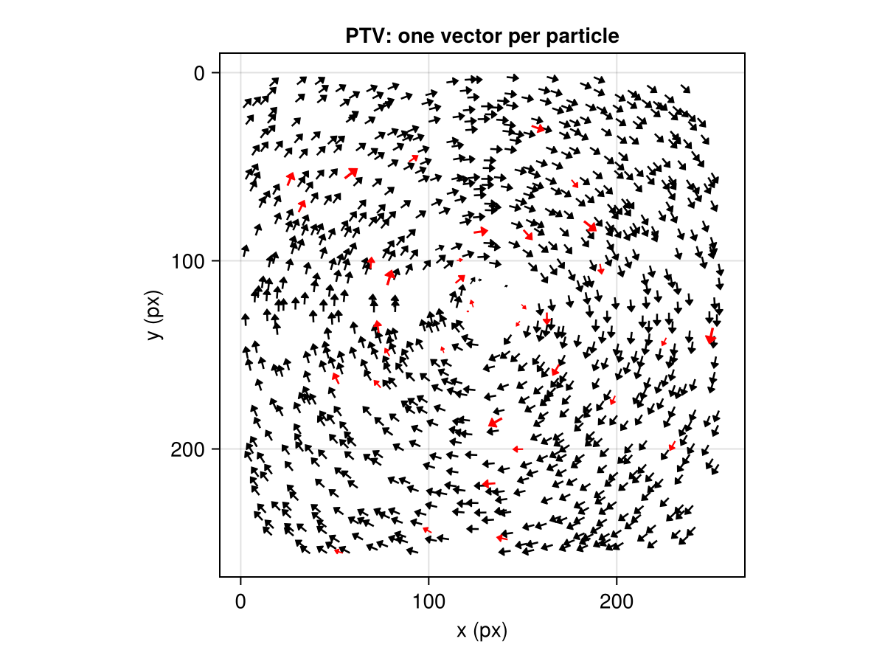
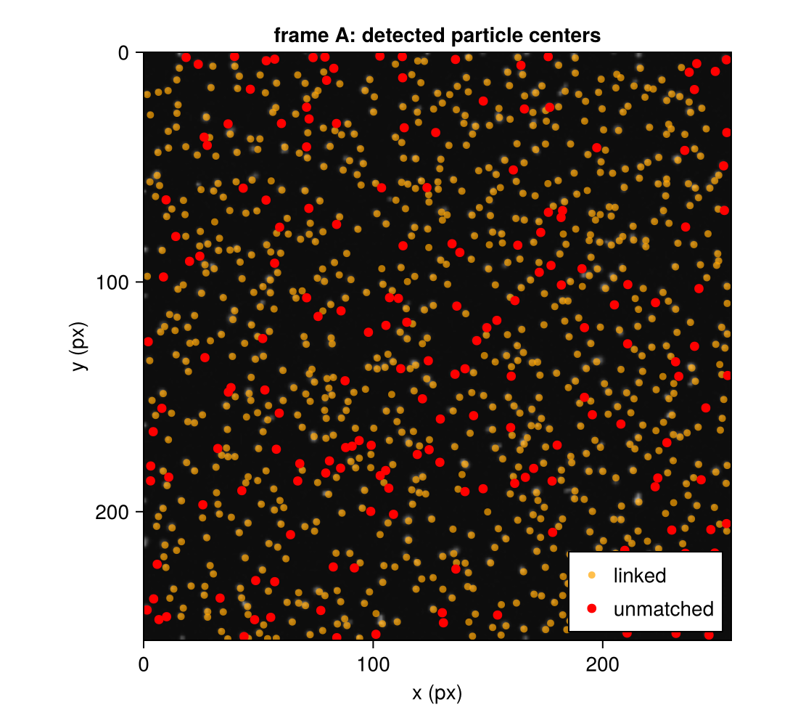
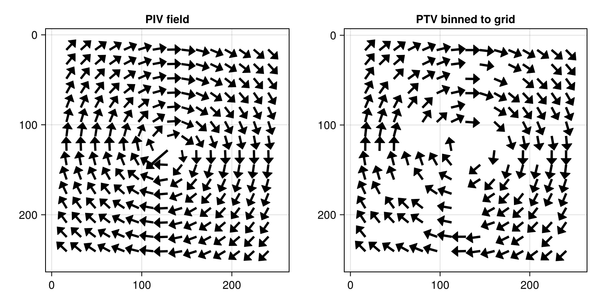
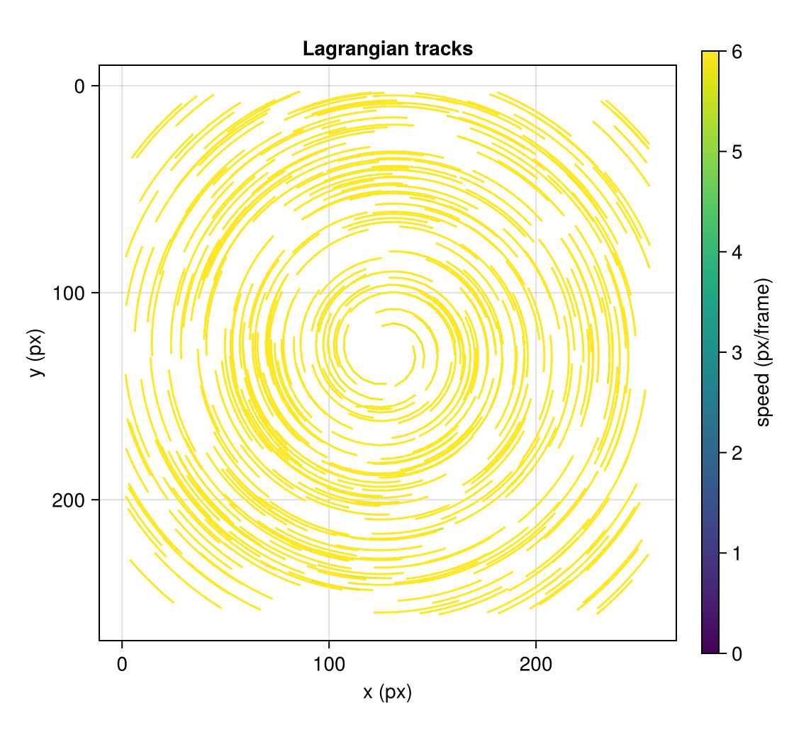
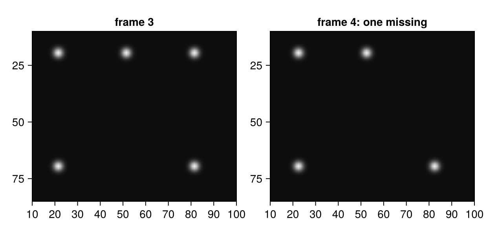

Particle tracking velocimetry (PTV)
Particle image velocimetry (PIV) reports one vector per interrogation window. Particle tracking velocimetry (PTV) instead follows identifiable particles. With sparse seeding, such as near a wall or in a dilute spray, you can follow individual particles and measure their paths (Lagrangian measurements). PIV reports velocities at fixed grid locations (an Eulerian field). Hammerhead's PTV pipeline detects particles, matches them between frames, and links matches across a sequence. This synthetic example supplies known particle positions for checking the matches.
A tracked image pair
Generate a pair at lower seeding density than the PIV examples, leaving enough separation to identify individual particles.
using Hammerhead
using Hammerhead.SyntheticData
using Random
using Statistics: median
include(joinpath(pkgdir(Hammerhead), "docs", "lit", "helpers", "advanced_tutorials.jl"))
vortex = vortex_flow(128.0, 128.0, 6.0, 0.0) # constant 6 px azimuthal speed
imgA, imgB, truthA, truthB = generate_synthetic_piv_pair(
vortex, (256, 256), 1.0;
particle_density = 0.015,
background_noise = 0.01,
z_range = (-1.0, 1.0),
rng = MersenneTwister(42),
)
size(imgA)(256, 256)run_ptv analyzes both frames. By default, it uses a coarse run_piv field to predict where each particle goes. This helps nearest-neighbor matching when the displacement (here about 6 px) approaches the particle spacing (Keane et al., 1995). Matched vectors are then validated with a scattered normalized-median test (Duncan et al., 2010) that flags outliers but never replaces them. Each tracked displacement belongs to one particle; replacing it with a neighboring value would erase that measurement.
ptv = run_ptv(imgA, imgB)PTVResult{Float64}(842 matches of 1025/1017 particles, 35 outliers)The PTVResult stores the frame-A particle positions (x, y), the displacement to frame B (u, v), and diagnostics. The Makie extension draws the scattered vectors directly (outliers in red):
using CairoMakie
plot_vector_field(ptv; axis = (title = "PTV: one vector per particle",))
Before trusting the vectors, check what was detected. Overlay the detected centers on frame A. Orange marks linked detections; red marks detections without a frame-B match. Inspect bright particles without a marker and markers that sit on noise or merged images.
let
fig = Figure(size = (550, 500))
ax = Axis(fig[1, 1]; title = "frame A: detected particle centers",
xlabel = "x (px)", ylabel = "y (px)", yreversed = true,
aspect = DataAspect())
image!(ax, imgA'; colormap = :grays)
linked = falses(length(ptv.particles_a))
linked[ptv.index_a] .= true
scatter!(ax, ptv.particles_a.x[linked], ptv.particles_a.y[linked];
color = (:orange, 0.7), markersize = 7, label = "linked")
scatter!(ax, ptv.particles_a.x[.!linked], ptv.particles_a.y[.!linked];
color = :red, markersize = 9, label = "unmatched")
axislegend(ax; position = :rb)
fig
end
Frame-A attribution makes the ground-truth check exact
generate_synthetic_piv_pair returns index-aligned truth (truthA[i] ↔ truthB[i]). Since PTV attributes vectors to frame A and the generator advances particles from frame A, we can compare displacements directly. The reference-matching bookkeeping is in the small tutorial matching helper loaded above. Read detections, linked, and unmatched_a alongside correct_fraction: the error statistic includes only correctly identified links. A method that reports a tiny error for a few easy links but misses most particles is not sufficient.
tutorial_ptv_diagnostics(ptv, truthA, truthB)(detections_a = 1025, truth_a = 983, linked = 842, identifiable = 796, unmatched_a = 183, identity_switches = 16, correct_fraction = 0.9798994974874372, median_error_px = 0.025808977628883054)Task: compare linked with detections_a, then inspect the unlinked particles in the overlay. If missed particles cluster in dim or crowded regions, tune detection before changing the match search radius.
Scattered vectors versus a gridded field
PIV gives a regular grid, with spatial smoothing set by the interrogation windows. PTV gives scattered measurements at detected particle positions. ptv_to_grid bins tracked vectors by their median in each grid cell. The resulting field works with field_statistics, plotting, and predictors like any masked PIVResult:
piv = run_piv(imgA, imgB, multipass_parameters([64, 32]; padding = true, apodization = :gauss))
gridded = ptv_to_grid(ptv, size(imgA); window_size = (32, 32), overlap = (16, 16))
fig = Figure(size = (760, 380))
plot_vector_field!(Axis(fig[1, 1]; title = "PIV field", yreversed = true,
aspect = DataAspect()), piv)
plot_vector_field!(Axis(fig[1, 2]; title = "PTV binned to grid", yreversed = true,
aspect = DataAspect()), gridded.x, gridded.y, gridded.u, gridded.v)
fig
Linking a sequence into trajectories
Given more than two frames, track_particles chains matches into Lagrangian tracks. Once a track has two positions, a constant-velocity prediction guides its next match. Build a short sequence by stepping the particles through the vortex:
sheet = GaussianLaserSheet(0.0, 40.0, 1.0) # thick sheet: no dropout
field = generate_particle_field((256, 256), 0.008; z_range = (-0.5, 0.5),
rng = MersenneTwister(7))
frames = Matrix{Float64}[]
for k in 1:8
push!(frames, render_particle_image(field, (256, 256), sheet;
background_noise = 0.0,
rng = MersenneTwister(100 + k)))
global field = displace_particles(field, vortex, 1.0)
end
tracks = track_particles(frames, PTVParameters(); min_track_length = 5, progress = false)
length(tracks.trajectories)431Each Trajectory is one particle's path; trajectory_velocities gives per-point velocity by finite differences. We draw every track, colored by instantaneous speed:
fig2 = Figure(size = (560, 520))
ax = Axis(fig2[1, 1]; title = "Lagrangian tracks", yreversed = true,
aspect = DataAspect(), xlabel = "x (px)", ylabel = "y (px)")
for t in tracks.trajectories
u, v = trajectory_velocities(t)
lines!(ax, t.x, t.y; color = hypot.(u, v), colormap = :viridis, colorrange = (0, 6))
end
Colorbar(fig2[1, 2]; colorrange = (0, 6), colormap = :viridis, label = "speed (px/frame)")
fig2
Each line shows one tracked particle. Together the tracks show the vortex circulation across the sequence.
What a missed frame does to a track
Use a small controlled sequence so only one particle is absent in frame 4. The other four particles provide context for the matcher. All particles move one pixel right per frame; the upper-right one disappears once.
starts = [(20.0, 20.0), (50.0, 20.0), (80.0, 20.0),
(20.0, 70.0), (80.0, 70.0)]
frames_gap = [begin
img = zeros(128, 128)
for (i, (x, y)) in enumerate(starts)
k == 4 && i == 3 && continue
generate_gaussian_particle!(img, (x + k - 1, y), 6.0)
end
img
end for k in 1:8]
gap_params = PTVParameters(search_radius = 3.0, uod_enable = false)
gapped = track_particles(frames_gap, gap_params; predictor = nothing,
min_track_length = 5, max_gap = 1, progress = false)
target_bridge = only(filter(t -> hypot(t.x[1] - 80, t.y[1] - 20) < 1,
gapped.trajectories))
target_bridge.frames7-element Vector{Int64}:
1
2
3
5
6
7
8Compare frame 3 with frame 4. The upper-right particle is missing in frame 4 while the other four remain. Inspect target_bridge.frames: it should skip frame 4 and resume at frame 5. A bridge is a predicted association, so check it carefully when trajectories cross.
let
fig = Figure(size = (620, 300))
for (i, (img, label)) in enumerate(((frames_gap[3], "frame 3"),
(frames_gap[4], "frame 4: one missing")))
ax = Axis(fig[1, i]; title = label, yreversed = true, aspect = DataAspect())
image!(ax, img'; colormap = :grays)
xlims!(ax, 10, 100); ylims!(ax, 85, 10)
end
fig
end
Where to go next
- For frame-A positions and outlier handling, see Coordinates, signs, and units.
- Detection, matching, and tracking parameters: the PTV reference.
- Batch tracking over many pairs:
run_ptv_sequencemirrorsrun_piv_sequence(see the batch guide).
This page was generated using Literate.jl.